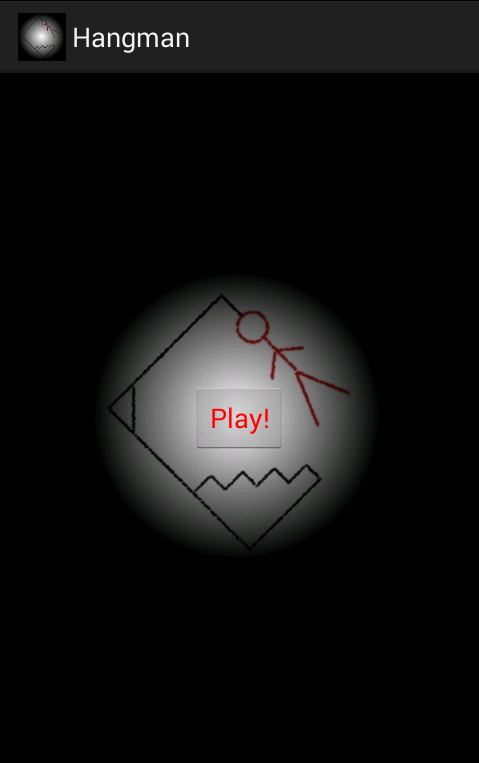
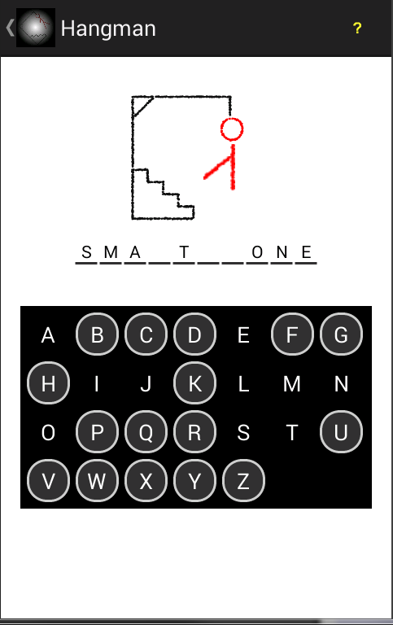
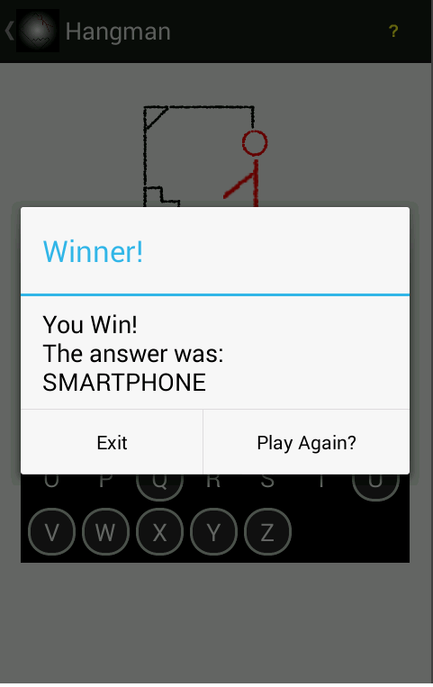

Developing mobile games has always been something i've thought about. Although I don't think that I would do it as a career(you never know though!) I definitely see it being a hobby of mine. This was my way of testing the waters for such a path. It's nothing spectacular and doesn't really use anything too special. It is still nice to see a hangman game implemented with a full working interface and user interaction. Prior to this the only hangman game that I worked on was terminal based with ASCII art. This version is much more complete, and as previously mentioned it introduced me to working with a few new android features. One of them was the ActionBar for navigating backwards in an app, which I had not done in my previous android projects at the time.
The intro screen to the game

The game being played

